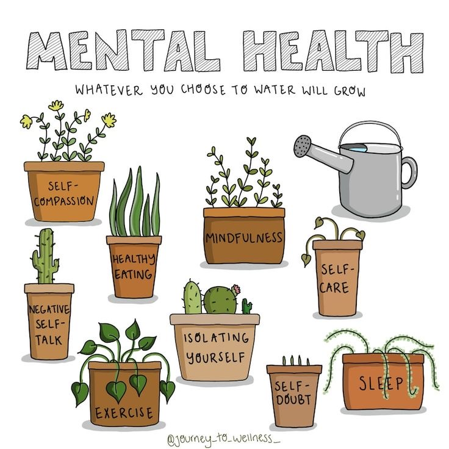

RESOURCES and HELP
If you are struggling with your mental health, it is important to seek professional help. There are many resources available to help you get the support you need.
Here are some tips for maintaining good mental health:
Get regular exercise.
Eat a healthy diet.
Get enough sleep.
Connect with others.
Learn to manage stress.
Avoid alcohol and drugs.
Seek professional help if needed.
Mental health is just as important as physical health. By taking care of your mental health, you can improve your overall well-being and live a happier and healthier life.
This Is A Safe Space Where You Can Ask Questions About Anything Concerning Mental Health And Wellness And Get Answers From Professionals.
If you or someone you know is struggling with a mental health disorder, plese reach out for help.
There are many resources available to you including hotlines, support groups and mental health professionals.
You are not alone.
Note; If you have any questions or would like to get involved, please don't hesitate to contact us.
Why is mental health and wellness important?
Mental health and wellness are just as important as physical health. When we have good mental health, we are able to:
Manage our emotions and behaviors
Build and maintain healthy relationships
Make productive contributions to our community
Enjoy life
What are the signs of good mental health and wellness?
Some signs of good mental health and wellness include:
Feeling good about yourself and your life
Feeling confident and able to cope with challenges
Having positive relationships with others
Being able to manage stress and emotions
Enjoying activities and hobbies
Being able to sleep well and have a healthy diet
Having a sense of purpose and meaning in your life
What are some things I can do to improve my mental health and wellness?
There are many things you can do to improve your mental health and wellness, including:
Talk to someone you trust. This could be a friend, family member, therapist, or other trusted person; Talking about how you're feeling can help you to process your emotions and come up with healthy coping mechanisms.
Get regular exercise. Exercise releases endorphins, which have mood-boosting effects. Aim for at least 30 minutes of moderate-intensity exercise most days of the week.
Eat a healthy diet. Eating nutritious foods can help you to feel better physically and mentally. Avoid processed foods, sugary drinks, and excessive amounts of caffeine and alcohol.
Get enough sleep. Most adults need around 7-8 hours of sleep per night. When you're well-rested, you're better able to cope with stress and manage your emotions.
Practice mindfulness. Mindfulness is the practice of paying attention to the present moment without judgment. It has been shown to be effective in reducing stress and improving mood. There are many different mindfulness exercises that you can try, such as meditation, yoga, or simply taking a few minutes each day to focus on your breath.
Seek professional help if needed. If you're struggling to cope with your mental health on your own, don't be afraid to seek professional help. A therapist can teach you coping skills and help you to develop a treatment plan.

My Social Media Handlels,there's plenty more information regarding mental health and wellness.
Visit My Youtube Channel